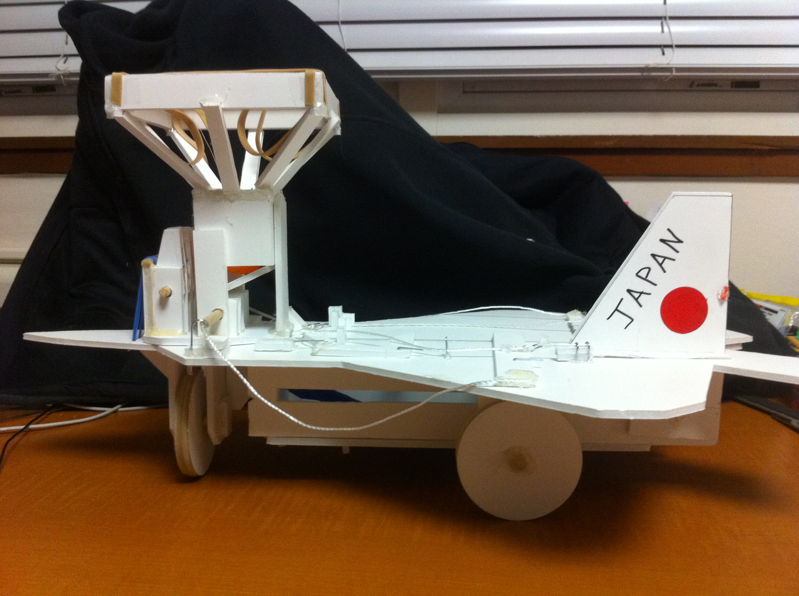

Raptor
Foamcore F22 for ME 101
ME 101 was my first Mechanical engineering class and was the one that convinced me that this major was the right one for me. The class was all about design and manufacturing and the final project was to create a foamcore robot that could move 2 feet, pause, throw and catch the same ball four times in a row, move back to its starting position, and do a custom move at the end. My partner Roland Hence and I created Raptor as our solution to the prompt and not only was it the lightest and smallest robot of the class, it was the only one that fulliled all of the design requirements on presentation day. Because electronics were strictly off limits for this class we triggered all of the movements by deflating a party balloon at a constant rate which allowed us to keep our robot simple and compact. Before taking this class I was on track to either be a computer scientist or a chemical engineer but ME 101 make me fall in love with designing physical things. Completed Fall of 2011.
